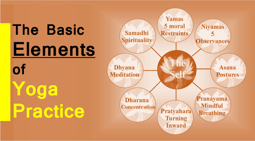
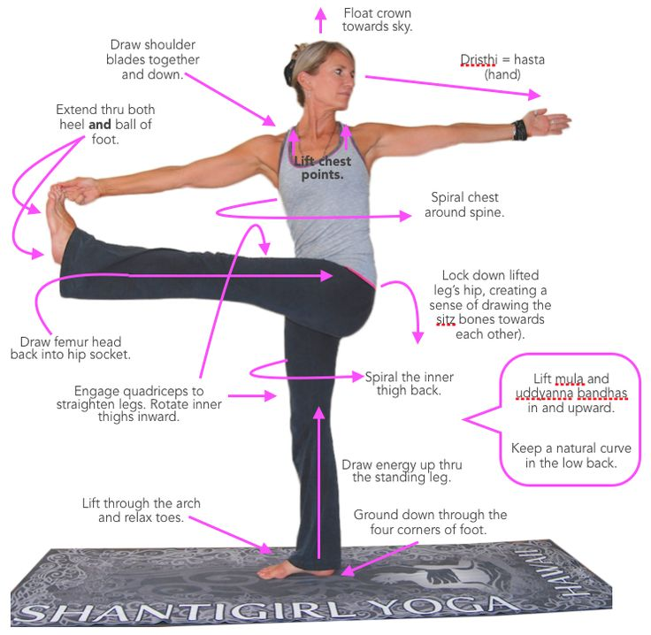

Element of Yoga
The Yoga Sutras describe the eight-fold (or eight-limbed) path to enlightenment or a purposeful life. All wording in Yoga is in Sanskrit. The eight limbs are:
1st The Yamas - ethical standards or behavior patterns, describing how we should live our lives. They include: Ahimsa (non-violence "do no harm"), Satya (truthfulness), Asteya (non-stealing), Brahmacharya (self-restraint) and Aparigraha (non-covetousness).

2nd The Niyamas - an attitude that we adopt toward ourselves regarding self-discipline. Guidelines for good, clean and healthy living. They are: Saucha (cleanliness), Samtosha (modesty, contentment), Tapas (heat/cleansing the body…keeping it fit/healthy), Svadhyaya (self-inquiry) and Isvara pranidhana (surrender to God).
3rd Asanas - the physical postures we practice in yoga. The body is thought to be a temple of the spirit, and as such, we should take care of it as an essential stage of our growth spiritually. As we develop a habit of disciplined practice of the Asanas (postures), we detoxify and purify, and increase our ability to concentrate and meditate.
4th Pranayama - breath control or "life force extension". Numerous breathing exercises are practiced to move this energy (prana) within us and rejuvenate the body, even possibly extending our lives.
5th Pratyahara - the withdrawal of the senses, directing attention inward…which provides a unique opportunity to look at ourselves realistically. Observing cravings and habits, and thus freeing ourselves from negative traits. Closing the eyes facilitates this inward journey.
6th Dharana - concentration of the mind with a directed mental stream of energy and mental focus, focusing on a single thing or a sound. This precedes Dhyana.
7th Dhyana - Meditation or contemplation. Completely uninterrupted flow of concentration with a quiet or "still" mind.

8th Samadhi - superconsciousness or a state of continual bliss or ecstasy. A "peace that passeth all understanding". Enlightenment. Yoga has been popularized in the West due to its mysteriously beneficial effects to those who practice it with dedication. Once a "practitioner" (someone who engages in the regular "practice" of yoga) becomes devoted, they consider yoga an incredible gift in their life that they wouldn't want to be without. Yoga is not a religion, although most yoga practitioners find that it enhances and deepens their own religious or spiritual beliefs (whatever they might be) in often profound ways. "Hatha" Yoga is translated from Sanskrit as "sun" (heating postures) and "moon" (cooling postures), and refers to the physical yoga…the "exercise" of the physical postures…yoga of the body. Any yoga where you practice the physical postures is Hatha Yoga, no matter what style it is. There are so many different styles and branches, that we couldn't mention them all here!
BACK